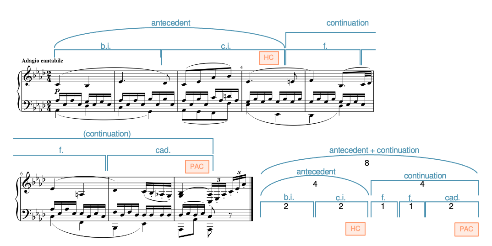
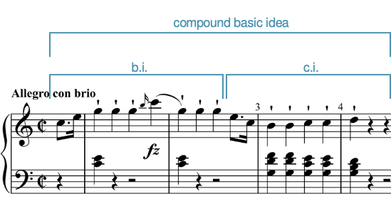
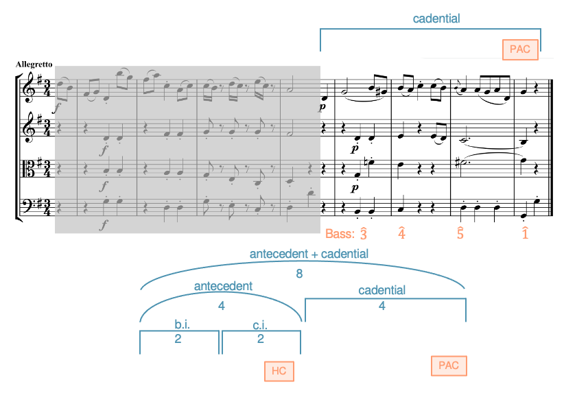
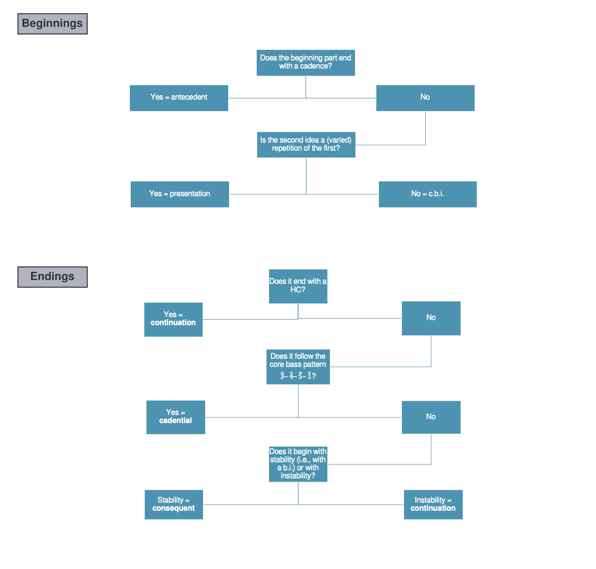

Open Music Theory：繁體中文版
混合的樂句層次形式
查看英文原文
Key Takeaways
- A hybrid form combines the beginning of one archetype with the ending from another.
- Possible beginnings are antecedents, presentations, or compound basic ideas.
- Possible endings are consequents, continuations, or cadential endings.
- Although any beginning could be combined with any ending, some pairings are more common than others (see Example 7).
在〈樂句、典型結構與獨特形式〉中，我們探討過兩種樂句層次的典型結構：樂句型（sentence）與樂段（period）。
{kind=link}

- antecedent＝前句；
- continuation＝延續部；
- b.i.＝基本樂思；
- c.i.＝對比樂思；
- f.＝片段；
- 此圖cad.＝終止樂思。
- HC＝半終止；
- PAC＝完全正格終止。
- 全體8小節＝前句4＋延續部4；
- 前句2+2，延續部1+1+2。
Adagio cantabile＝如歌的慢板。
查看英文原文
What's a hybrid form?
In The Phrase, Archetypes and Unique Forms, we looked at two phrase-level formal archetypes: the sentence and the period.
We found that these forms divide into two parts. A sentence divides into two subphrases: a presentation and a continuation. A period divides into two phrases: an antecedent and a consequent.
A hybrid form occurs when the beginning of one archetype is paired with the ending from another archetype. In Example 1, an antecedent is followed by a continuation.
- How do we know the first part is an antecedent rather than a presentation?
- It ends with a weaker cadence, whereas presentations don't end with cadences.
- It has a basic idea followed by a contrasting idea, whereas presentations have a basic idea followed by a repetition of the basic idea.
- How do we know the second part is a continuation rather than a consequent?
- Rather than beginning as consequents do with a basic idea, it begins with fragmentation, which is characteristic of continuations.
- It begins with a feeling of instability created by the dominant that continues after the half cadence, rather than the stability that's typical of a consequent's beginning.
So far, we know two beginnings (presentation and antecedent) and two endings (continuation and consequent), but there's actually one more possible beginning (compound basic idea) and one more possible ending (cadential). Below, we'll outline these new beginnings and endings and provide ways to help distinguish between them.
新類型：複合基本樂思（c.b.i.）
{kind=link}

- compound basic idea＝複合基本樂思；
- b.i.＝基本樂思；
- c.i.＝對比樂思。
Allegro con brio＝有活力的快板。
查看英文原文
New: The Compound Basic Idea (c.b.i.)
A compound basic idea (c.b.i.) is an antecedent without a cadence, as seen in Example 2.[1]
- How is Example 2 like an antecedent?
- It contains a basic idea followed by a contrasting idea.
- How is Example 2 different from an antecedent?
- It doesn't end with a cadence. Notice how the bass sits on G across mm. 3–4: although the melody comes to a point of rest, the lack of harmonic motion in the bass evades the half cadence (HC) that might have appeared there.
彙整：三種開頭類型
混合的樂句層次形式有三種開頭：前句、複合基本樂思與呈示部。例 3 彙整了區分這些開頭的特徵。
| 開頭 | 以終止式結束？ | 第一個樂思 | 第二個樂思 |
|---|---|---|---|
| 前句 | 是 | b.i. | c.i. |
| 複合基本樂思 | 否 | b.i. | c.i. |
| 呈示部 | 否 | b.i. | b.i. |
例 3。區分各種開頭的特徵。
查看英文原文
Summary: The Three Beginning Types
The three beginnings that appear in hybrid phrase-level forms are antecedent, compound basic idea, and presentation. Example 3 provides a summary of the characteristics that differentiate each of these beginnings.
| Beginning | Ends with cadence? | First idea | Second idea |
|---|---|---|---|
| antecedent | Yes | b.i. | c.i. |
| compound basic idea | No | b.i. | c.i. |
| presentation | No | b.i. | b.i. |
Example 3. Characteristics that differentiate beginnings.
新類型：終止型結尾（cad.）
{kind=link}

- cadential＝終止型結尾；
- antecedent＝前句；
- b.i.＝基本樂思；
- c.i.＝對比樂思。
Bass＝低音，標示第三、四、五、一級。
- HC＝半終止；
- PAC＝完全正格終止。
8小節＝前句4＋終止型結尾4。
Allegretto＝稍快板。
- mi [latex](\hat3)[/latex]：I6。
- fa [latex](\hat4)[/latex]：ii6 或 IV。
- sol [latex](\hat5)[/latex]：V(7)，常以終止 [latex]^6_4[/latex] 加以裝飾。
- do [latex](\hat1)[/latex]：I。
這條核心低音線 mi–fa–sol–do [latex](\hat3-\hat4-\hat5-\hat1)[/latex] 可以加以裝飾。一種常見做法，是在 sol 前加入 fi [latex](\uparrow\hat4-\hat5)[/latex]，藉此主音化屬和弦，使低音線成為 mi–fa–fi–sol–do [latex](\hat3-\hat4-\uparrow\hat4-\hat5-\hat1)[/latex]。
最明確的終止型結尾長四小節，每小節配置一個低音。
查看英文原文
New: Cadential (cad.)
A cadential (cad.) ending harmonizes a particular bass pattern (demonstrated in Example 4).[2]
The core bass pattern is mi–fa–sol–do [latex](\hat3-\hat4-\hat5-\hat1)[/latex].[3] The common harmonization of each of these notes is:
- mi [latex](\hat3)[/latex]: I6
- fa [latex](\hat4)[/latex]: ii6 or IV
- sol [latex](\hat5)[/latex]: V(7) (often elaborated with cadential [latex]^6_4[/latex])
- do [latex](\hat1)[/latex]: I
This core mi–fa–sol–do [latex](\hat3-\hat4-\hat5-\hat1)[/latex] bass line may be embellished. A common embellishment is to tonicize the dominant by adding fi before sol ([latex](\uparrow\hat4-\hat5)[/latex], making the bass line mi–fa–fi–sol–do [latex](\hat3-\hat4-\uparrow\hat4-\hat5-\hat1)[/latex].
The clearest cadential endings are four measures long with one bass note per measure.
彙整：三種結尾類型
混合的樂句層次形式有三種結尾：後句、延續部與終止型結尾。例 5 彙整了區分這些結尾的特徵。
| 結尾 | 終止式 | 低音 | 樂思 |
|---|---|---|---|
| 後句 | PAC／IAC，不是 HC。 | 不固定。 | b.i. + c.i. |
| 延續部 | HC、IAC 或 PAC。 | 不固定。 | 不固定，但常分為 1+1+2 或 2+2。 |
| 終止型結尾 | PAC／IAC，不是 HC。 | Mi−fa−sol−do [latex](\hat3−\hat4−\hat5−\hat1)[/latex]，或這條低音線的裝飾形式。 | 分為 2+2，或不可再分。絕不呈現片段化。 |
例 5。區分各種結尾的特徵。
查看英文原文
Summary: The Three Ending Types
The three endings that appear in hybrid phrase-level forms are consequent, continuation, and cadential. Example 5 provides a summary of the characteristics that differentiate each of these endings.
| Ending | Cadence | Bass | Ideas |
|---|---|---|---|
| Consequent | PAC/IAC. Not HC. | Varies | b.i. + c.i. |
| Continuation | HC, IAC, or PAC. | Varies | vary, but often divided 1+1+2 or 2+2 |
| Cadential | PAC/IAC. Not HC. | Mi−fa−sol−do [latex](\hat3−\hat4−\hat5−\hat1)[/latex] or an elaboration of that line. | Either 2+2 or indivisible. Never features fragmentation. |
Example 5. Characteristics that differentiate endings.
下方提供「稍少見」與「偶爾出現」兩類中，所有混合形式的範例（例 8–12）。至於樂段與樂句型，〈樂句、典型結構與獨特形式〉已提供範例。
本章的範例都是八小節的典型結構；但如下一章將說明的，這些形式可以有任何長度。
| 開頭 | 結尾 |
|---|---|
| 前句 複合基本樂思（c.b.i.） 呈示部 | 後句 延續部 終止型結尾 |
例 6。可能的開頭與結尾。理論上，左邊任何開頭都能與右邊任何結尾配對。
| 形式 | 常見程度 |
|---|---|
| pres.+cont.（樂句型） ant.+cons.（樂段） | 很常見 |
| c.b.i.+cons. c.b.i.+cont. ant.+cont. | 稍少見 |
| c.b.i.+cad. ant.+cad. | 偶爾出現 |
| pres.+cad. pres.+cons. | 罕見或不存在 |
例 7。依常見程度排列的開頭與結尾配對。
{kind=link}
{kind=link}
{kind=link}
{kind=link}
{kind=link}
譯註來源：國際海頓基金會：第87號交響曲，各樂章調性、國際海頓基金會：第97號交響曲，各樂章調性、IMSLP：第87號交響曲第三樂章起頭譜例
- 共用標籤：antecedent＝前句；
- continuation＝延續部；
- compound basic idea／c.b.i.＝複合基本樂思；
- consequent＝後句；
- b.i.＝基本樂思；
- c.i.＝對比樂思；
- f.＝片段；
- u.＝單位。
- cad.在延續部內指終止樂思；
- cadential作為整個後半時指終止型結尾。
- HC＝半終止；
- IAC＝不完全正格終止；
- PAC＝完全正格終止。
- 例8：4+(1+1+2)；
- 例9：4+(2+2)；
- 例10、11：4+4；
- 例12：(2+2)+(2+2)。
- Adagio cantabile＝如歌的慢板；
- Allegro con brio＝有活力的快板；
- Allegretto＝稍快板；
- Menuetto／Menuet＝小步舞曲。
查看英文原文
Hybrid Possibilities and Examples
The three possible beginnings and three possible endings are shown in Example 6. While any beginning on the left could be paired with any ending on the right, Example 7 shows that there are some pairings that are more common than others.
Below, we provide examples for all hybrids in the "slightly less common" and "occasional" categories (Examples 8–12). We already provided examples of the period and sentence in The Phrase, Archetypes, and Unique Forms.
The examples we provide in this chapter are all eight-measure archetypes, but as we show in the next chapter, these forms can be any length.
| Beginnings | Endings |
|---|---|
| Antecedent Compound basic idea (c.b.i.) Presentation |
Consequent Continuation Cadential |
Example 6. Possible beginnings and endings. Any beginning on the left can theoretically pair with any ending on the right.
| Form | Degree of commonality |
|---|---|
| pres.+cont. (sentence) ant.+cons. (period) |
very common |
| c.b.i.+cons. c.b.i.+cont. ant.+cont. |
slightly less common |
| c.b.i.+cad. ant.+cad. |
occasional |
| pres.+cad. pres.+cons. |
rare or non-existent |
Example 7. Pairings of beginnings and endings sorted by degree of commonality.
- Example 8. An antecedent + continuation in Beethoven, Piano Sonata Op. 13, II, mm. 1–8 (0:00–0:31).
- Example 9. A compound basic idea + continuation in Haydn, Piano Sonata Hob. XVI:35, I, mm. 1–8 (0:00–0:10).
- Example 10. An antecedent + cadential in Haydn, String Quartet Op. 64, No. 4, II, mm. 1–8 (0:00–0:10).
- Example 11. A compound basic idea + cadential in Haydn, Symphony 95, III, mm. 1–8 (0:00–0:10).
- Example 12. A compound basic idea + consequent in Haydn, Symphony 97, III, mm. 1–8 (0:00–0:11).
可能的組合這麼多，要分辨起來可能讓人不知從何著手。例 13 提供一種聆聽策略，幫助你判斷聽到的是哪種開頭與結尾。
{kind=link}

- 開頭（Beginnings）：開頭部分是否以終止式結束？是→前句；
- 否→第二個樂思是否為第一個樂思的重複（可帶變化）？是→呈示部；
- 否→複合基本樂思。
- 結尾（Endings）：是否以半終止HC結束？是→延續部；
- 否→是否採用第三、四、五、一級的核心低音型態？是→終止型結尾；
- 否→開頭是否安定（也就是以基本樂思開始），或是不安定？安定→後句；
- 不安定→延續部。
- Caplin, William Earl. 2013. Analyzing Classical Form: An Approach for the Classroom. New York: Oxford University Press.
媒體素材署名
- Example_001_Ant+Cont（前句＋延續部）© John Peterson 與 Megan Lavengood，採用 CC BY-SA（姓名標示－相同方式分享）授權。
- Example_002a_compound_basic_idea（複合基本樂思）© John Peterson 與 Megan Lavengood，採用 CC BY-SA（姓名標示－相同方式分享）授權。
- Example_004a_cadential（終止型結尾）© John Peterson 與 Megan Lavengood，採用 CC BY-SA（姓名標示－相同方式分享）授權。
- Example_013a_Listening_Diagram_Caplin（聆聽判斷流程圖）© John Peterson 與 Megan Lavengood，採用 CC BY-SA（姓名標示－相同方式分享）授權。
查看英文原文
Listening to Phrase-level Forms
With so many possibilities, it might seem overwhelming to try to sort through the various possibilities. Example 13 offers a suggested listening strategy that can help determine what kind of beginning and ending you're hearing.
-
Caplin, William Earl. 2013. Analyzing Classical Form: An Approach for the Classroom. New York: Oxford University Press.
- Analyzing hybrid forms (.pdf, .docx). Provides excerpts and asks students to indicate which term best describes the first and second half of each. Optional harmonic analysis included. Worksheet playlist
- Analyzing forms with multiple possibilities (.pdf, .docx). Asks students to identify preferred and plausible alternative interpretations for several excerpts. Also includes band music. Worksheet playlist
- Composing phrase-level forms (.pdf, .docx). Asks students to compose a phrase-level form given a description. Provides a basic idea bank to give students a start.
Media Attributions
- Example_001_Ant+Cont © John Peterson and Megan Lavengood is licensed under a CC BY-SA (Attribution ShareAlike) license
- Example_002a_compound_basic_idea © John Peterson and Megan Lavengood is licensed under a CC BY-SA (Attribution ShareAlike) license
- Example_004a_cadential © John Peterson and Megan Lavengood is licensed under a CC BY-SA (Attribution ShareAlike) license
- Example_013a_Listening_Diagram_Caplin © John Peterson and Megan Lavengood is licensed under a CC BY-SA (Attribution ShareAlike) license
- What is "compound" about the compound basic idea? It often functions as the basic idea of a large sentence, one that is sixteen measures in length, where the presentation is eight measures long and comprises two c.b.i. units. It's "compound" in the sense that these large basic ideas are themselves composed of two units: a b.i. and a c.i. ↵
- What is the difference between a cadential idea and cadential ending? The cadential idea comes at the end of a continuation, and essentially, the cadential ending is like the cadential idea being expanded to four measures and replacing the continuation. That means that "cadential" can occur at two formal levels: the idea level and the subphrase level. ↵
- This can also occur in minor, of course, as me–fa–sol–do [latex](\downarrow\hat3-\hat4-\hat5-\hat1)[/latex]. ↵